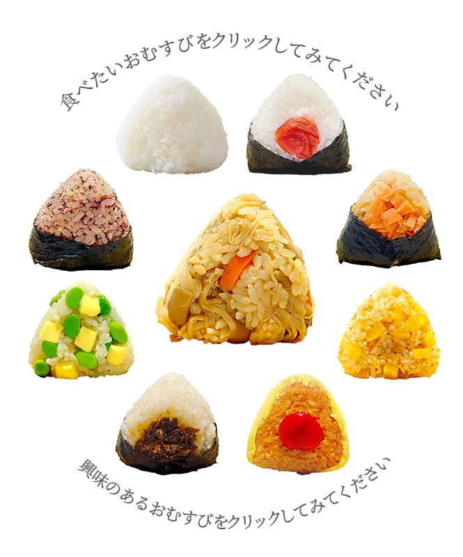
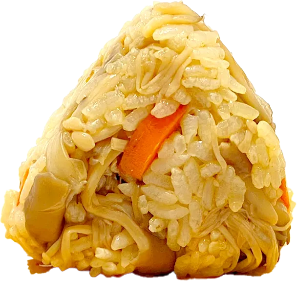
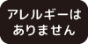
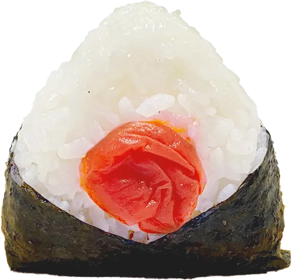
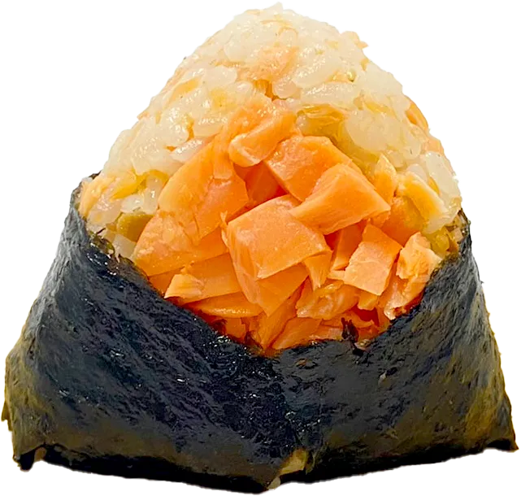
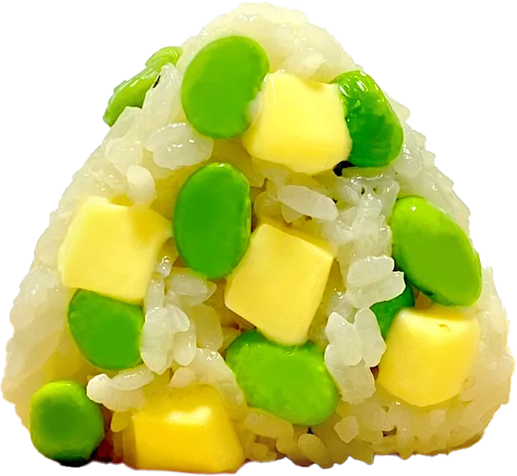
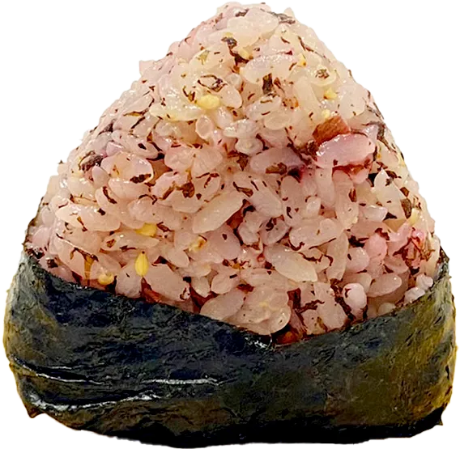
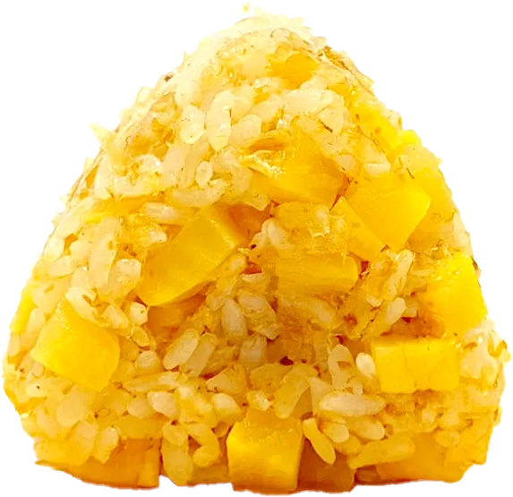
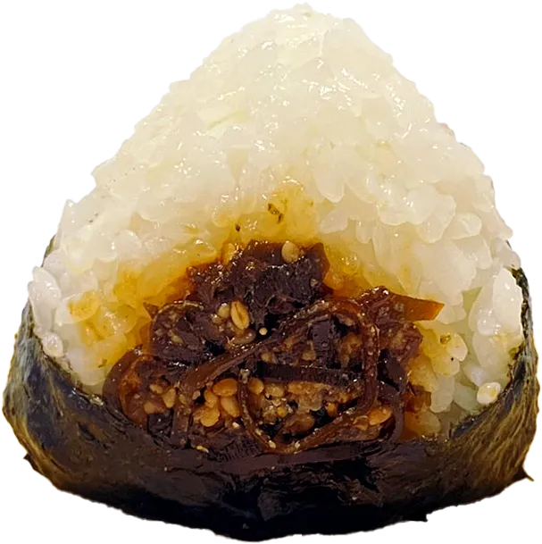
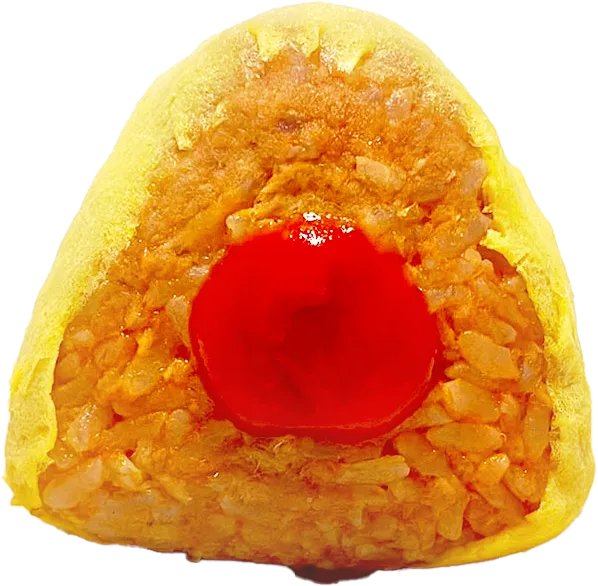

おむすび一覧

注意事項
温め直しについて
冷えた場合はラップをして電子レンジで軽く温めていただくとよりふっくらとお楽しみいただけます。
600Wで30秒ほどが目安。
（おむすび1個の場合）
※具材によっては温めに向かないものもございます（梅干し・たくあん等）
テイクアウトに関するお願い
できるだけお渡し後2時間以内を目安にお召し上がりください。
暑い時期は特に、お早めにお願いいたします。
季節限定

きのこ炊き込みご飯
¥380（税込）
きのこ炊き込みご飯
旬のしいたけ・えのき・しめじをたっぷり使った きのこの炊き込みごはんです。香り高く食感のよいオリジナルおむすびです。
エネルギー：200kcal
アレルギー
大豆
小麦
定番

塩むすび
¥200（税込）
塩むすび
お米本来のおいしさを感じていただける当店自慢の塩むすび。お米のうまみや甘みをより引き出せるよう、釜焚き自然海塩を使用しています。大分県内有数の美しい海岸の海水を鉄釜で焚き上げたうま味たっぷりの塩です。
エネルギー：170kcal
アレルギー


うめぼし
¥250（税込）
うめぼし
果肉が柔らかさが特徴の日田市大山町で育った南高梅を使用。天然塩と有機栽培の赤シソで丁寧に漬け込み酸味と旨みを凝縮しました。
エネルギー：180kcal
アレルギー

鮭ほぐし
¥300（税込）
鮭ほぐし
脂のりがよくふっくらした身のサーモンを塩焼きに。ごろごろと食べ応えのあるほぐし加減と鮭の旨みがお米のと相性抜群の人気商品です。
エネルギー：200kcal
アレルギー
鮭

枝豆クリームチーズ
¥350（税込）
枝豆クリームチーズ
枝豆のむき身を混ぜ込んだ変わり種おむすび。塩ゆでにした枝豆とクリームチーズの相性がよく、手土産にも人気の一品です。
エネルギー：230kcal
アレルギー
牛乳
大豆

赤紫蘇ゆかり
¥220（税込）
赤紫蘇ゆかり
大分産の無農薬赤紫蘇をふんだんに使用したゆかりごはんのおむすび。しょっぱさと旨みが感じられる赤紫蘇は甘味あるお米によく合います。
エネルギー：175kcal
アレルギー

おかかたくあん
¥250（税込）
おかかたくあん
旨刻みたくあんと醤油で和えたおかかを混ぜこみました。カリカリしたたくあんの食感と、おかかの旨みがしみたお米の相性の良さが人気です。
エネルギー：210kcal
アレルギー
大豆
小麦

こんぶの佃煮
¥220（税込）
こんぶの佃煮
大分県佐賀関町で収穫されるこんぶで作った香り高い佃煮です。たまり醤油で煮込んだうまみたっぷり昔ながらの味わいです。
エネルギー：190kcal
アレルギー
大豆
小麦
ごま

オムライス
¥220（税込）
オムライス
大分の大自然で平飼いされたにわとりの、うまみが強い卵をふわっと焼き上げ、当店のオリジナルレシピで作ったチキンライスを包みました。お子様にも食べやすいおむすびです。
エネルギー：230kcal
アレルギー
卵
豚
鶏
牛
トマト
⚫写真はイメージです。
実際の提供方法・提供容器は写真と異なる場合がございます。
⚫アレルギーについて
おむすびの具材には卵・乳製品・大豆・小麦などを使用している商品もございます。
⚫塩むすび 塩について
釜焚き自然海塩を使用しています。 大分県内有数の美しい海岸の海水を鉄釜で焚き上げたうま味たっぷりの塩です。
⚫︎消費期限について
その日のうちにお召し上がりください。
⚫衛生面について
お客様に安心してお召し上がりいただけるよう、 当店では食品衛生法に基づいた衛生管理を行っております。 スタッフの健康チェック・手洗い・消毒・調理器具の洗浄を徹底し、清潔な環境で調理しています。
すべては
「安全でおいしいおむすび」の
ために。